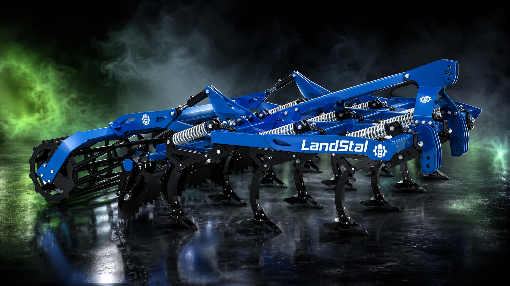
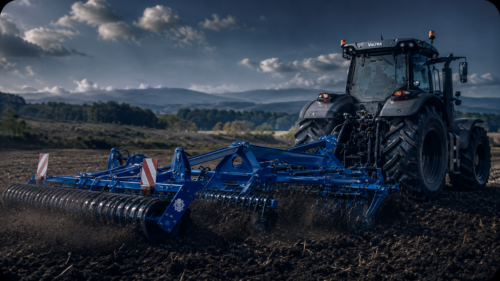
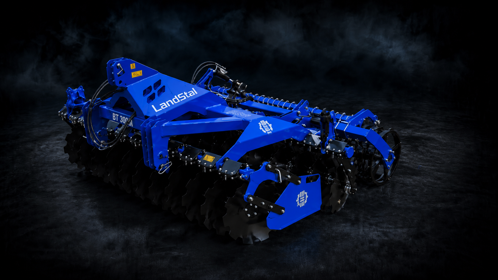
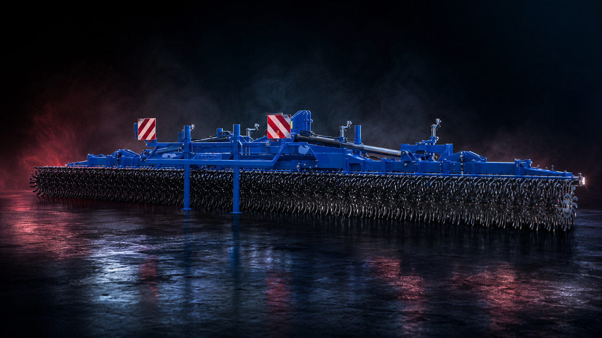

LANDSTAL CZ | Barnet a Synové
Stroje Landstal pro české farmáře
Prodej, předvádění a servis. Přinášíme robustní půdní techniku Landstal na česká pole s lokální podporou rodinné firmy Barnet a Synové.

Zemědělské stroje Landstal
Technika pro půdu, setí a údržbu luk
LANDSTAL CZ pomáhá českým farmám vybrat stroje Landstal podle půdy, výkonu traktoru, pracovního záběru a očekávaného nasazení v sezoně.
Landstal je výrobce zemědělské techniky zaměřené na praktickou práci v poli: zpracování půdy po sklizni, hlubší kypření, přípravu seťového lůžka, setí, válcování a péči o travní porosty. Českým zákazníkům stroje dodává LANDSTAL CZ ve spolupráci s firmou Barnet a Synové. Nejde jen o předání katalogu. Pomáháme porovnat možnosti, vysvětlit rozdíly mezi konfiguracemi a doporučit řešení, které odpovídá konkrétní farmě, traktoru i půdním podmínkám.
V nabídce jsou především stroje pro zpracování půdy. Pro mělké až středně hluboké zapravení posklizňových zbytků a rychlou přípravu pozemku se často řeší diskové podmítače Landstal. Jsou vhodné pro podniky, které potřebují využít krátké pracovní okno po sklizni a chtějí spojit řezání rostlinných zbytků, promísení a urovnání povrchu. U těžších pozemků nebo při opakovaném zhutnění půdy dávají smysl hloubkové kypřiče a podrýváky, které pomáhají narušit utužené vrstvy bez zbytečného obracení půdního profilu.
Pro farmy, které hledají úsporu času a přejezdů, jsou důležitou kategorií secí kombinace Landstal. Jejich cílem je spojit přípravu půdy a setí do jednoho pracovního postupu tak, aby pole zůstalo rovnoměrně připravené a osivo mělo stabilní podmínky pro vzcházení. Samostatnou roli mají také luční brány pro údržbu luk, pastvin a travních porostů. U zákazníků se často řeší provzdušnění drnu, rozhrnutí krtin, podpora odnožování a možnost přísevu travních směsí.
Česká pole jsou různorodá: lehčí půdy, těžké jíly, svažité pozemky, kamení, sucho i krátké termíny mezi sklizní a setím. Proto se u stroje nevybírá jen značka a pracovní šířka. Důležité je jištění pracovních orgánů, typ válce, hmotnost, požadovaný výkon traktoru, doprava po silnici, hydraulické nároky a dostupnost servisu. LANDSTAL CZ proto doporučení staví na rozhovoru se zákazníkem. U poptávky se ptáme na typ stroje, pracovní záběr, výkon traktoru, lokalitu, výbavu a termín dodání. Díky tomu lze lépe odhadnout, zda je vhodnější nesený, tažený nebo sklopný stroj a jaká konfigurace bude na farmě dávat smysl.
Součástí českého zastoupení je také servisní a poradenská podpora. Po dodání pomáháme s uvedením stroje do práce, nastavením v podmínkách zákazníka a s řešením náhradních dílů. Pro zemědělce, služby i obce je důležité, aby stroj nebyl jen jednorázový nákup, ale použitelný nástroj na několik sezon. Pokud hledáte robustní zemědělské stroje pro zpracování půdy, setí nebo péči o louky, projděte si produkty Landstal nebo nám napište přes kontaktní stránku. Připravíme nezávazné doporučení podle vaší půdy, traktoru a plánovaného využití.
Portfolio strojů
Samostatné stránky pro každý stroj
Každý stroj má vlastní detail s technickými informacemi, fotkami a možností rovnou domluvit předvedení.




Blog a poradna
Praktické články pro výběr stroje
Návody pro farmáře, kteří řeší výkon traktoru, pracovní záběr, zhutnění půdy, výběr podmítače nebo regeneraci luk a pastvin.
Diskové podmítače
Jak vybrat diskový podmítač podle traktoru a půdy
Na co se dívat při volbě pracovního záběru, výkonové rezervy, typu půdy a zadního válce.
Přečíst článekHloubkové kypření
Kdy použít hloubkový kypřič a jak poznat zhutnění půdy
Typické příznaky utužení, vhodné termíny zásahu a údaje potřebné pro doporučení konfigurace.
Přečíst článekLuční brány
Luční brány a regenerace pastvin po zimě
Proč obnovovat travní porosty, kdy vyjet na pozemek a komu dávají luční brány největší smysl.
Přečíst článekTradiční hodnoty, moderní technika
Barnet a Synové od 1992
Česká rodinná firma z Hrušky u Němčic nad Hanou. Zajišťujeme prodej, předvádění, zaškolení obsluhy a servis zemědělské techniky v terénu i na provozovně.
LANDSTAL
Polský výrobce robustní zemědělské techniky pro zpracování půdy, setí, válcování a mechanické ošetření porostů. Důraz na pevnost, jednoduché nastavení a spolehlivost.
Poptávka
Máte zájem?
Vyplňte nezávaznou poptávku nebo si domluvte předvedení stroje u vás na poli.